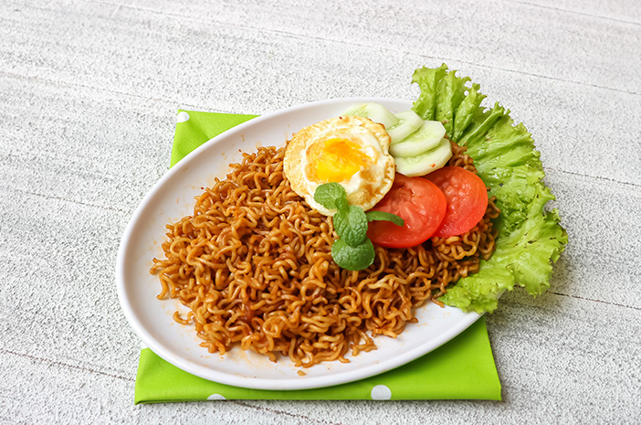
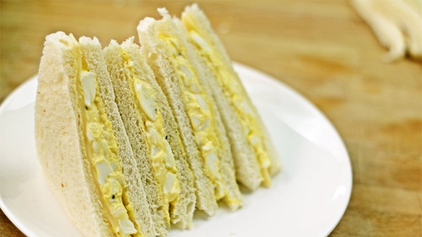

Nasi Goreng Spesial
Nasi goreng dengan bumbu rempah khas Indonesia, dilengkapi telur ceplok, ayam suwir, dan kerupuk renyah.
- Waktu
- Kesulitan
- Mudah
RecipeMate membantu kamu menemukan resep lezat berdasarkan bahan yang sudah ada di dapur. Tidak perlu bingung lagi — cukup ketik bahan yang kamu punya, dan kami siapkan resepnya!
Pilih bahan yang kamu punya dan temukan resep yang bisa dibuat sekarang.
Lihat semua bahan →
Nasi goreng dengan bumbu rempah khas Indonesia, dilengkapi telur ceplok, ayam suwir, dan kerupuk renyah.

Rendang otentik Padang dengan daging sapi empuk dan bumbu rempah yang meresap sempurna. Hidangan kebanggaan Indonesia.

Soto ayam khas Lamongan dengan kuah kuning segar, suwiran ayam, telur rebus, dan taburan koya gurih.

Pasta Italia klasik dengan saus telur dan keju pecorino yang creamy, dipadu bacon gurih dan lada hitam segar.

Salad sayuran khas Indonesia dengan saus kacang yang gurih dan manis, dilengkapi tempe goreng dan lontong.

Ayam panggang ala Jepang dengan saus teriyaki manis-gurih yang khas, sempurna disajikan bersama nasi putih hangat.
Resep lezat siap saji dalam 30 menit atau kurang.
Lihat semua →Telur dadar tipis dan gurih dengan bumbu kunyit, bawang merah, dan cabai. Lauk praktis favorit sehari-hari.

Mie goreng kecap dengan sayuran dan telur, bumbu sederhana yang selalu enak dan bisa dibuat kapan saja.

Sandwich klasik dengan isian telur rebus hancur, mayones, dan mustard. Sarapan cepat yang mengenyangkan.

Tumis kangkung dengan terasi dan cabai yang wangi dan gurih. Sayur pelengkap favorit yang selalu habis di meja makan.
Temukan resep berdasarkan kategori favoritmu.